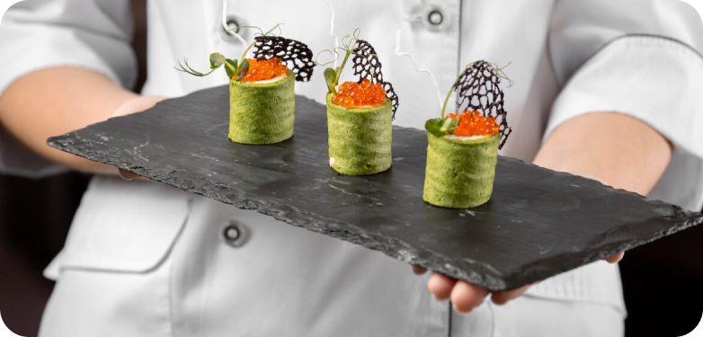
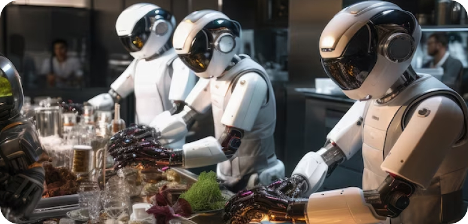

Our Blog
Explore the evolving landscape of catering and glimpse into the future of this dynamic industry. From innovative technologies to emerging trends, discover how catering is adapting to meet the changing needs and preferences of modern consumers.
1. Tech-Driven Solutions: Delve into the role of technology in revolutionizing the catering industry. From online ordering platforms to mobile apps for menu customization and real-time updates, technology is streamlining the catering process and enhancing the customer experience.
2. Personalized Experiences: Discover the growing demand for personalized catering experiences tailored to individual preferences and dietary requirements. From customizable menu options to interactive food stations, catering companies are prioritizing personalization to cater to diverse tastes and preferences.
3. Sustainable Practices: Explore the increasing focus on sustainability within the catering industry. From sourcing locally grown ingredients to reducing food waste through innovative cooking techniques and composting initiatives, sustainability is becoming a key priority for caterers aiming to minimize their environmental footprint.
4. Innovative Menu Offerings: Learn about the latest culinary trends shaping the future of catering menus. From plant-based and vegan options to globally inspired cuisine and fusion dishes, catering companies are embracing culinary creativity to offer unique and memorable dining experiences.
5. Innovative Menu Offerings: Learn about the latest culinary trends shaping the future of catering menus. From plant-based and vegan options to globally inspired cuisine and fusion dishes, catering companies are embracing culinary creativity to offer unique and memorable dining experiences.
6. Virtual and Hybrid Events: Explore the impact of virtual and hybrid events on the catering industry. With the rise of remote work and virtual gatherings, catering companies are adapting their offerings to accommodate virtual events, offering curated meal kits and virtual cooking classes to enhance the at-home dining experience.
7. Health and Wellness: Understand the growing emphasis on health and wellness within the catering industry. From offering nutritious menu options to incorporating wellness-focused activities such as yoga sessions and mindfulness workshops into event packages, catering companies are catering to the health-conscious consumer.
8. Cultural Diversity: Celebrate the rich tapestry of cultural diversity reflected in catering menus and offerings. From showcasing authentic regional cuisines to embracing food traditions from around the world, catering companies are celebrating diversity and inclusivity through their culinary offerings.
9. Artificial Intelligence: Explore the potential of artificial intelligence (AI) in revolutionizing the catering industry. From predictive analytics for menu planning to AI-powered chatbots for customer service and feedback, AI technologies are enabling catering companies to streamline operations and enhance the customer experience.
10. Adaptability and Resilience: Recognize the adaptability and resilience of the catering industry in the face of challenges such as the COVID-19 pandemic. From pivoting to new service models such as contactless delivery and outdoor dining to implementing rigorous safety protocols, catering companies are demonstrating their ability to adapt and innovate in response to changing circumstances.
